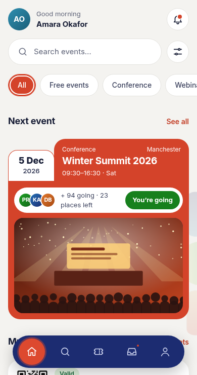
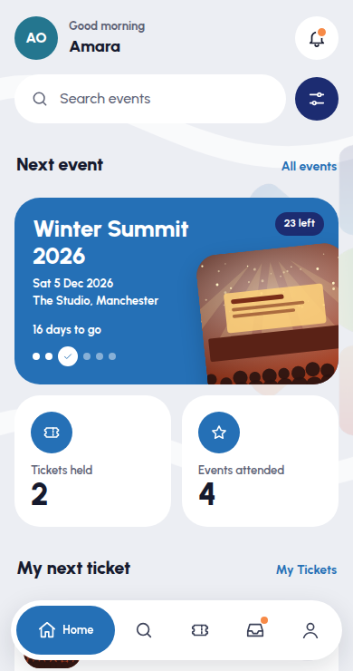

Lab to Ed Leadership Events
Clickable mobile prototypes. Each version covers the same 31 member and Admin screens with the same sample data, styled after a different reference.
-

Alternative A Alternative A – Ref1 Warm, photo-led event cards with a date tab, outlined filter chips and a floating navy pill tab bar, led by the logo red. Open prototype -

Alternative B Alternative B – Ref2 Bento-style white tiles on a cool grey canvas with big numbers and the logo blue as the main colour, with navy accents. Open prototype
Jump straight to a flow
Links open Alternative A; every screen has an "All versions" button at the top to come back here.
Prototype only. No data is sent anywhere; forms move to the next screen. "Today" is Thursday 19 November 2026.